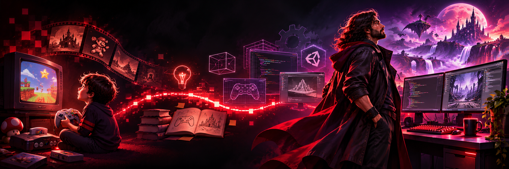

DEVLOG / PERSONAL STORY
A NEW CHAPTER BEGINS

Once upon time, a young child was gifted by an old console, a Nintendo 64, with a really special game, Super Mario 64. This was the first contact with what will be a lifestyle, a passion and lately, a profession. That boy was me, and from that moment I knew I wanted to be part of a world full of stories to tell, characters to meet, worlds to explore, and fantasy to dream.
In 2023, video games turned from just a strong hobby into a goal of life: I actually desired to create that worlds which I had dreamt with. Four years later, I got that target: becoming in a video game developer. I could not be more proud, glad and delighted. Now, I am starting my own business with this website. It has been thought and programmed by myself. Here I will be publishing my projects, demos to download, as well as information about progression, future releases and something of me.
I truly believe that video games are not only an entertainment media, but also a way of living, a space where you can just let your mind and imagination fly, an art at themselves. I have learned history, watched how Egypt, Crusades or Scandinavia were in the past, lived huge adventures, known amazing characters, and visited breathe-taking worlds thanks to the video games. I have been served by a beautiful experience and personal, as well as professional growing, furthermore, I have served by happiness due to them.
On the one hand, I will be working in current projects, updating the website periodically, writing ideas and mechanics, doing my best for a future professional project. On the other hand, in coming, I will hire personal services of coding, debugging, UI design or IA behaviour, trying to gain costumers. At last, I will be keeping my learning, taking small Unity coursers, trying Blender or studying about freelance. There are many work to do, but this a goal of life and my dream, and I will be on it to coming true.
Welcome to EK-Journey, the future brant, welcome to a long and hard journey through the heart, the passion and the self improvement. Welcome to my site which you can share with me. Feel free of looking the site and download and tasting my games. Despite it is just a step for the moment, future waits better products each time. Thanks for visit my site and I hope you are comfortable here. New things in coming.
Go to the this adventure!